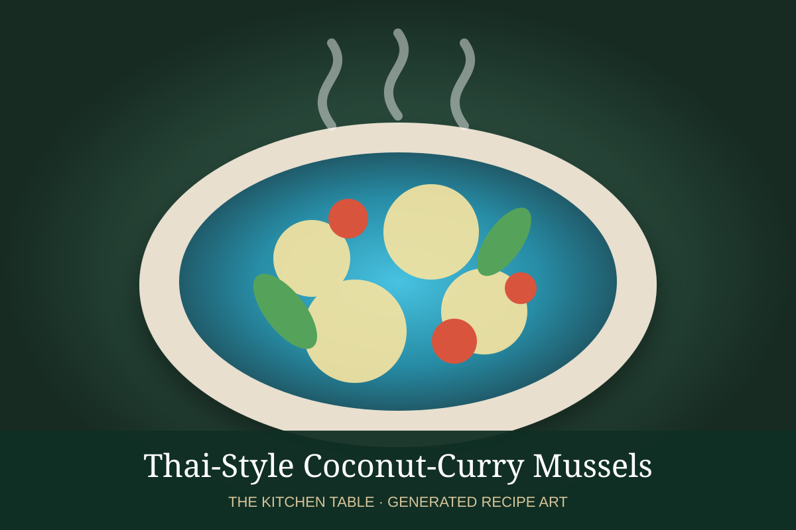

← Back to all recipes
SEAFOOD · THAI
Thai-Style Coconut-Curry Mussels
Mussels steamed in a fragrant coconut curry broth with ginger, garlic, lemongrass, lime, chile, and cilantro.
30 minServes 4

Photo: Wikimedia Commons
Ingredients
- 2 lb mussels, scrubbed and debearded
- 1 tbsp neutral oil
- 1 large shallot, thinly sliced
- 3 garlic cloves, minced
- 1 tbsp grated fresh ginger
- 1 stalk lemongrass, tender inner portion finely minced
- 2 tbsp Thai red curry paste
- 1 can (13.5 oz) full-fat coconut milk
- ½ cup seafood stock or water
- 1 tbsp fish sauce
- 1 tsp brown sugar
- 1 tbsp fresh lime juice
- 1 small red chile, sliced
- ⅓ cup cilantro leaves
- Lime wedges, for serving
Preparation
- Discard cracked mussels and any open mussels that do not close when tapped.
- Heat the oil in a large covered pot. Cook shallot until softened, then add garlic, ginger, lemongrass, and curry paste; cook until fragrant.
- Add coconut milk, stock, fish sauce, and brown sugar. Simmer for 3 to 4 minutes.
- Add the mussels, cover, and steam 4 to 6 minutes, shaking the pot once or twice, until the mussels open.
- Discard any unopened mussels. Stir in lime juice and finish with sliced chile and cilantro. Serve immediately.